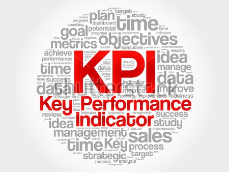

KPI es un acrónimo formado por las iniciales de los términos: Key Performance Indicator. La traducción valida en castellano de este término es: indicador clave de desempeño o indicadores de gestión. Los KPIs son métricas que nos ayudan a identificar el rendimiento de una determinada acción o estrategia. Estas unidades de medida nos indican nuestro nivel de desempeño en base a los objetivos que hemos fijado con anterioridad.
En un entorno tan cambiante como es el actual, es necesario comparar periódicamente los resultados que estamos obteniendo con los objetivos fijados. Esto nos permitirá averiguar si vamos por buen camino o si existen desviaciones negativas. Si no estamos obteniendo los resultados esperados, los KPIs nos permitirán darnos cuenta y poder reaccionar a tiempo.
“Lo que no se puede medir no se puede controlar; lo que no se puede controlar no se puede gestionar; lo que no se puede gestionar no se puede mejorar.”
Los KPIs se agrupan gráficamente en cuadros de mando para que los directivos puedan ser agiles en la toma de decisiones. En el Cuadro de Mando Integral se incluyen los principales indicadores clave para la empresa, y de una forma visual se obtiene la información deseada de nuestro rumbo sobre el plan establecido.
caracteristicas de los KPI
Medible: Anteriormente he mencionado que los KPIs son métricas, por tanto su principal característica es que son medibles en unidades. Ejemplo: 1,2, 100, 1000, 1000.000
Cuantificable: Si se puede medir, se puede cuantificar. Por ejemplo si hablamos de unidades monetarias las cuantificaríamos en USD o $. También existen muchos indicadores de gestión que se miden en porcentaje.
Específico: Se debe centrar en un único aspecto a medir, hemos de ser concretos.
Temporal: Debe poder medirse en el tiempo. Por ejemplo podemos querer medir a diario, de forma semanal, mensual o anual.
Relevante: El propio término hace referencia a esta característica “Indicadores Clave de Gestión”. Únicamente sirven aquellos factores que sean relevantes para nuestra empresa.
Los KPIs tienen que informar, controlar, evaluar y por último ayudar a que se tomen decisiones. Cada empresa tiene sus propios indicadores de gestión, puesto que cada organización y cada modelo de negocio tienen factores clave a medir diferentes. Una empresa de producción industrial hará foco en indicadores de producción y una empresa que únicamente venda a través de internet tendrá otros indicadores clave relacionado con métricas de marketing digital.
Existen diferentes indicadores clave, y tal y como mencionábamos es necesario adaptarlos a cada modelo de negocio. Los indicadores clave que son relevantes para una empresa no necesariamente tienen que serlo para otra. Existen indicadores de gestión económicos, de producción, financieros, de calidad, de logística, de servicio. A continuación puedes ver unos ejemplos de KPI de marketing y gestión comercial:
Ingresos y Costos:
Ventas totales, Ventas por productos, Ventas por delegaciones, Costo de adquisición de cliente, Inversión total en marketing.
Fidelización de Clientes:
Rentabilidad de cliente, Tasa de retención de clientes, Índice de satisfacción del cliente, Nº de clientes fidelizados.
Competitividad y Branding:
Cuota de mercado, Tasa de crecimiento del mercado, Grado de penetración, Valor de marca, Notoriedad de marca.
Método para Establecer tus Propios KPIs
¿Quieres saber cómo crear un KPI o como puedes seleccionar los correctos para tu empresa? Para identificar, seleccionar y trabajar correctamente factores clave para establecer los indicadores clave de gestión correctos para tu empresa debes seguir el método que proponemos a continuación, respondiendo a las siguientes preguntas: a) ¿Qué queremos medir?, b) ¿Por qué medimos este dato?, c) ¿Es un factor clave para la empresa?, d) ¿Quién es el responsable de supervisarlo?, y e) ¿Con que periodicidad conviene supervisarlo?.
Como has podido observar, los indicadores de gestión son una excelente herramienta de supervisión y control de tu planificación y de tus acciones. Te permitirá discernir entre aquellas acciones que son más y menos rentables, y sobretodo el grado de cumplimiento de los objetivos fijados. Siempre recomiendo que la implementación de KPI, tiene que ser consecuencia de una correcta planificación estratégica, no servirá de nada medir los resultados de unas acciones mal planteadas desde el inicio.
Por otra parte, tal y como comentaba al inicio del artículo, los Key Performance Indicator son indicadores claves de la empresa, por consiguiente no podemos caer en el error de querer medirlo todo, hay que aprender a descartar aquellos que no sean relevantes para nuestros propósitos. Normalmente recomendamos fijar un máximo de tres indicadores por cada objetivo que nos hayamos marcado.
Los cuadros de mando integral formados por indicadores de gestión KPIs, son herramientas imprescindibles para directivos y managers de empresas de todo el mundo. Las organizaciones tienen que tomar decisiones constantemente y si no conocemos en que situación nos encontramos, difícilmente tomaremos una buena decisión.
Esta publicación ha sido elaborada detenidamente, sin embargo, ha sido redactada en términos generales y debe ser considerada, interpretada y asumida únicamente como una referencia general que posee carácter informativo.
La información y material contenidos en esta publicación son meramente informativos y no reemplazan la consulta y asesoramiento de profesionales. La información provista no es una recomendación, asesoramiento o sugerencia para la realización de cualquier actividad, operación, inversión o negocio, quedando “SVA Consultores” exentos de todo tipo de responsabilidad por las decisiones que pudiera tomar el lector de la misma. Tampoco será responsable por los daños y/o perjuicios que como consecuencia de la misma, o por errores, omisiones, o inexactitud de la información contenida en ella pudiera sufrir el lector.